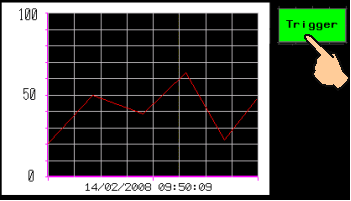
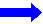
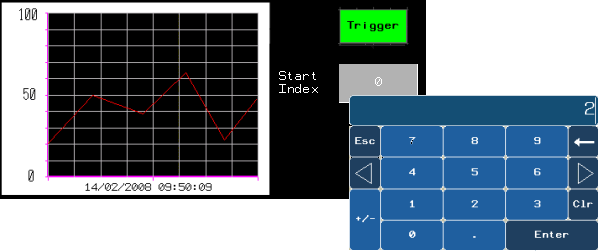
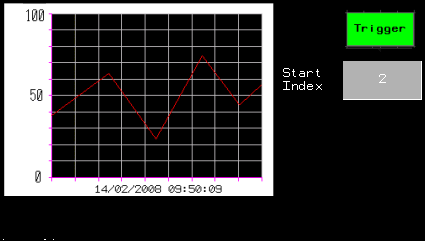

|
|
|
|
|
|
|
|
A block trend graph is typically used if you want to display high-speed data captured by the PLC and if you want to change the data you are viewing at run time. With a block trend graph, you can display data for multiple data samples at a point in time. A block trend graph can display up to 1024 data samples from each block variable. You can set up a maximum of eight block variables. Block trend graphs have two styles:
Line

Bar

A block trend graph displays data samples only when a trigger is sent. When the trigger is sent, data is requested from the block variable, which obtains the latest values from the PLC and stores them in the block elements. The requested data then displays on the block trend graph.
You can define the trigger and trigger type in the block trend graph properties. To set up the trigger for the block trend graph, we recommend you create a switch. For more information, see Section 13.6.2, Setting Up Block Trend Graphs.
At run time, when you press the trigger, the block trend graph resets to display current data.

You would typically need to trigger the block trend graph when:
On opening the panel, the values are not displayed on the block trend graph.
An error or an event occurs and you would need to redraw the values on the block trend graph.
You have changed values (Number of Data, Value Min, Value Max, Start Index) and you want to update the block trend graph display.

When you display data on a block trend graph, change panels, and then return to the block trend graph panel, the block trend graph becomes blank. To display the data on the block trend graph again, you must activate the trigger.
In a bar graph, when multiple channels are enabled, channels are displayed sequentially (i.e. Channel 1, Channel 2, Channel 3, and so on). For example, if the value of Channel 1 is greater than the value for each subsequent channel, the bars for the other channels will be hidden under the bar for Channel 1. As a result, you will only see Channel 1 displayed.
You can change the elements you want displayed on the block trend graph by changing the Start Index value. In Vijeo-Designer, set the Start Index to a variable. Then create a numeric display, and set the variable to reference the variable defined for the Start Index. At run time, you can use the numeric display to change the Start Index value. The following example displays the block trend graph when the Start Index value is changed from 0 to 2.
|
Start Index = 0 BlockInteger01 Elements Block elements 0 to 4 are displayed on the block trend graph. |
 |
Start Index = 2 BlockInteger01 Elements Block elements 2 to 6 are displayed on the block trend graph. |
At run time, set the Start Index to the element you want using the keypad.

Then trigger the block trend graph. The number of data samples you specified starting at the changed block element will display on the block trend graph.

For more information on the Start Index property and how to set up the numeric display, see Section 13.6.2, Setting Up Block Trend Graphs.
You can get a zoom in/out view of the sampled data horizontally (X-axis) and vertically (Y-axis), by defining valid values in the Number of Data, Value Min, Value Max properties for the Block Trend Graph. The Number of Data property indicates the number of data samples to display in the block trend graph view, and the Value Min/Value Max properties define the minimum and maximum values for each channel of the graph.
At run time, when you zoom in, less data samples are displayed. When you zoom out, more data samples are displayed. You can change your zoom in/out view at run time. To do this, set up a numeric display each for Number of Data, Value Min, and Value Max. For more information, see Section 13.6.2, Setting Up Block Trend Graphs.